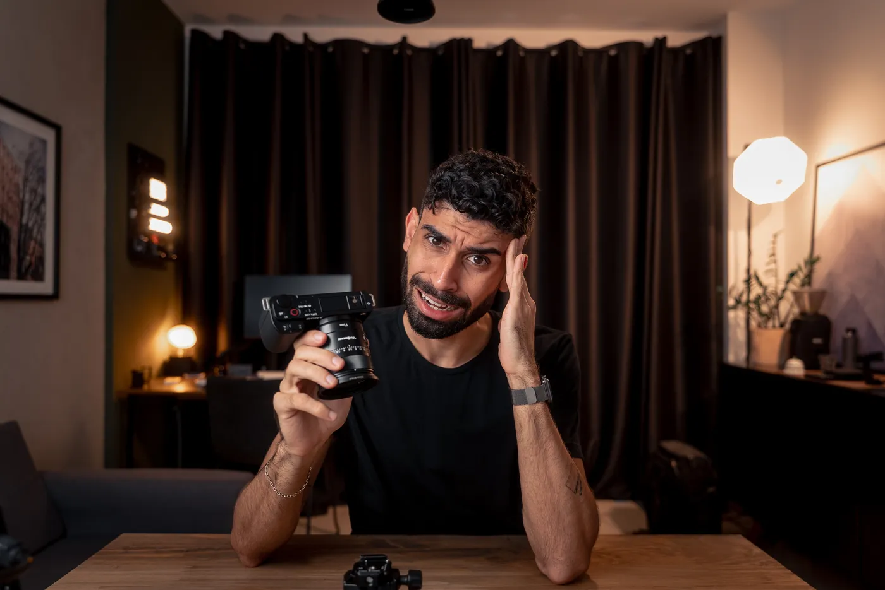
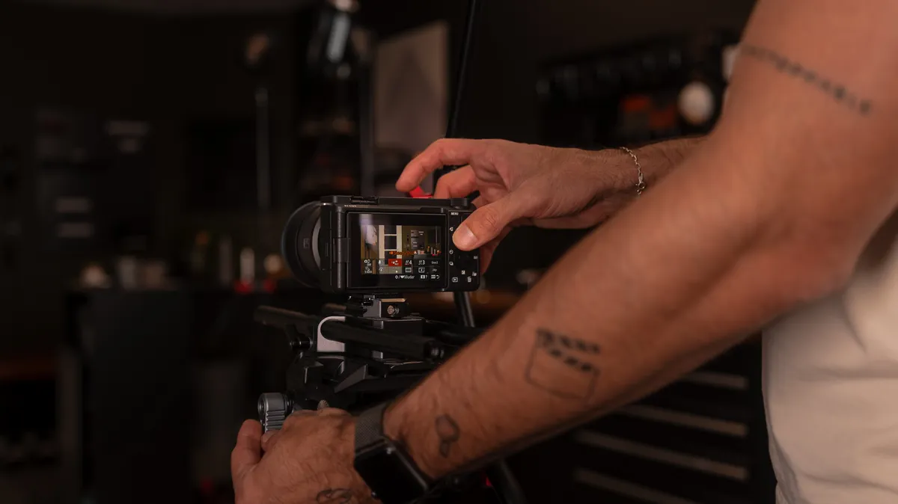
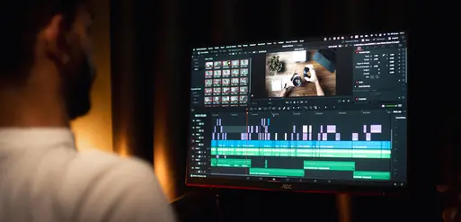
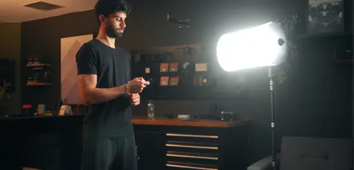
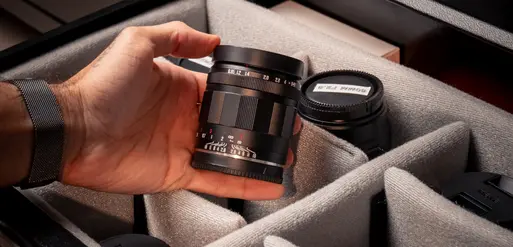
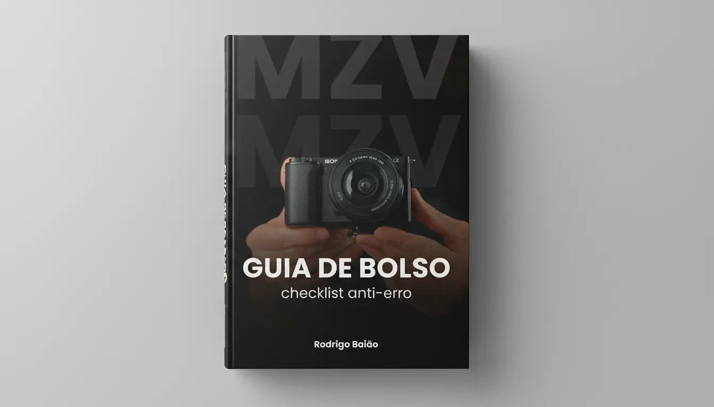
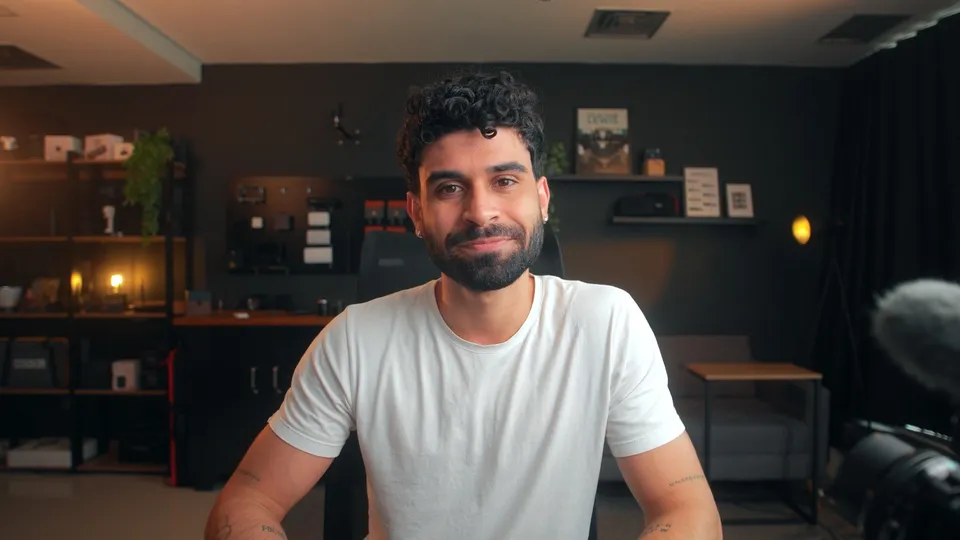

Grave com qualidade de cinema na ZV-E10. Do zero, passo a passo.
- Gravar no automático e torcer pra dar certo.
- Perder tempo com tutorial solto.
- Configurar uma vez, do jeito certo.
Acesso imediato · 7 dias pra desistir sem motivo
Esse protocolo é pra você?

Se isso é você
“Gravei, assisti e pensei: ficou ruim.”
É pra você se…
- Você tem uma ZV-E10 (Mark I ou II) e não tira dela o que vê nos outros.
- Você grava, assiste e pensa: ficou ruim.
- Você vive no automático, torcendo pra dar certo.
- Você já viu tutorial e continua perdido.
- Você já pensou em desistir da câmera.
- Você compra equipamento e o vídeo continua igual.
Não é pra você se…
- Você só quer uma dica solta.
- Você quer resultado sem abrir o menu.
- Você não vai colocar nada em prática.
- Você usa outra câmera, não a ZV-E10.
- Você ainda não tem a ZV-E10.
Do erro ao acerto
Na mesma câmera. Só muda a configuração.
E por dentro, muda mais ainda
Não é a câmera. É a configuração. E configuração se aprende. Passo a passo.
O que é o MZV?
Um protocolo de desbloqueio da Sony ZV-E10: passo a passo, você libera o que a sua câmera já tem para gravar com qualidade de cinema.
Mesmo que você nunca tenha saído do automático, ou já tenha tentado tutorial e continue perdido.
7
módulos do protocolo
+35
aulas passo a passo
5
bônus incluídos
1 ano
de acesso

Tudo com a câmera na mão, aula por aula
É mais fácil do que parece
Você não precisa entender de câmera. Só seguir.
Menu traduzido
Eu traduzo o menu complicado da Sony no que importa, em linguagem simples.
Copie o meu setup
Botões e atalhos prontos, é só repetir na sua.
Checklist de bolso
Bata o olho antes do REC e saiba que está certo.
Tudo isso está dentro do MZV.
Veja, módulo a módulo, o que você recebe:
O Protocolo de Desbloqueio ZV-E10
— Completo (Mark I e Mark
II)
Por que não basta assistir tutorial solto
O problema não é falta de informação. É falta de sistema.
O MZV é um protocolo completo, feito só para a ZV-E10. Não é uma aula solta.
Tutoriais soltos
Pedaços de informação
Você junta peças de vários lugares e não sabe se vão se encaixar.
Protocolo ZV-E10
Uma sequência só
- 1Configurar do zero
- 2Menu e foco
- 3Erros de vídeo e áudio
- 4Câmera rápida de usar
- 5Imagem de cinema
- 6S-Log
- 7Imprevistos
Cada passo prepara o próximo. Você sempre sabe onde está.
Mark I e Mark II · 7 módulos · 5 bônus
O Que Mais Você Leva
Totalmente
de Graça
Ao entrar hoje, você libera na hora estes 5 bônus premium, feitos para acelerar ainda mais os seus resultados.

Destravando a Edição no DaVinci Resolve
O passo a passo exato para importar, cortar, colorir e exportar seus arquivos da ZV-E10 com a qualidade máxima, no mesmo software usado em produções de cinema.

O Segredo da Iluminação de Estúdio
Pare de lutar contra as sombras. Saiba como posicionar uma luz simples e barata para criar um visual cinematográfico imediato.

Guia de Compras
Inteligente
Lentes, cartões SD, baterias e acessórios. A lista completa e testada do que comprar (e do que evitar pagar caro) para montar seu kit perfeito.

Checklist Anti-Erro
— Guia de Bolso
O Checklist com todas as configurações essenciais para você bater o olho antes de apertar o REC e garantir que nada vai dar errado.

Envie Seu Vídeo
e Receba Feedback
Gravou com o que aprendeu? Envie o seu vídeo e receba um feedback direto do Rodrigo, com o que ajustar para a sua imagem ficar ainda melhor.
Você não fica sozinho
Tire dúvidas
Pergunte em qualquer aula. Eu leio e respondo.
Receba feedback
Envie seu vídeo e ouça do Rodrigo o que ajustar.
Sem gasto à toa
Pra começar, só a ZV-E10. Eu mostro o que vale comprar depois.
Quem vai te guiar
Eu sou o Rodrigo Baião
Ensino audiovisual pra criador de conteúdo. Passo os macetes, mas o principal é te ensinar a entender o que você tem e a usar do jeito certo.
Uso a ZV-E10 todos os dias no meu conteúdo. O que está aqui dentro é o que eu aplico na minha própria câmera.
+4.200
alunos
Conhecimento vale mais que equipamento.
Fechar a página e seguir no automático, com imagens comuns.
Dominar os menus e destravar a qualidade de cinema da sua câmera.
O investimento mais difícil você já fez
Agora falta usar de verdade o que você já comprou. O MZV custa 12x de R$ 41,75, cerca de 8% do valor da câmera à vista.
Resumo do Valor
ou R$417 à vista
PIX e Cartão de Crédito
7 dias pra desistir sem motivo · 30 dias de garantia de resultado

Risco zero. Duas garantias.
7dias
Desista sem dar motivo
Não era o que você esperava? Peça o dinheiro de volta.
30dias
Garantia de resultado
Fez a sua parte e a sua imagem não melhorou? Eu devolvo 100%.
O método é meu. O resultado é de quem aplica.
A garantia é para quem coloca a mão na câmera:
Perguntas Frequentes
Ficou com alguma dúvida?
Funciona para Mark I e Mark II?
Preciso comprar mais alguma coisa?
E se eu não gostar?
O protocolo é para iniciantes?
Quanto tempo tenho acesso?
Como acesso o protocolo?
Quais as formas de pagamento?
Há algum suporte durante o protocolo?
E se eu já assistir tutoriais no YouTube?
Sua ZV-E10 já é boa. Falta só configurar.
12x de R$ 41,75 ou R$ 417 à vista.
QUERO DOMINAR MINHA ZV-E10 AGORA7 dias pra desistir sem motivo · 30 dias de garantia de resultado